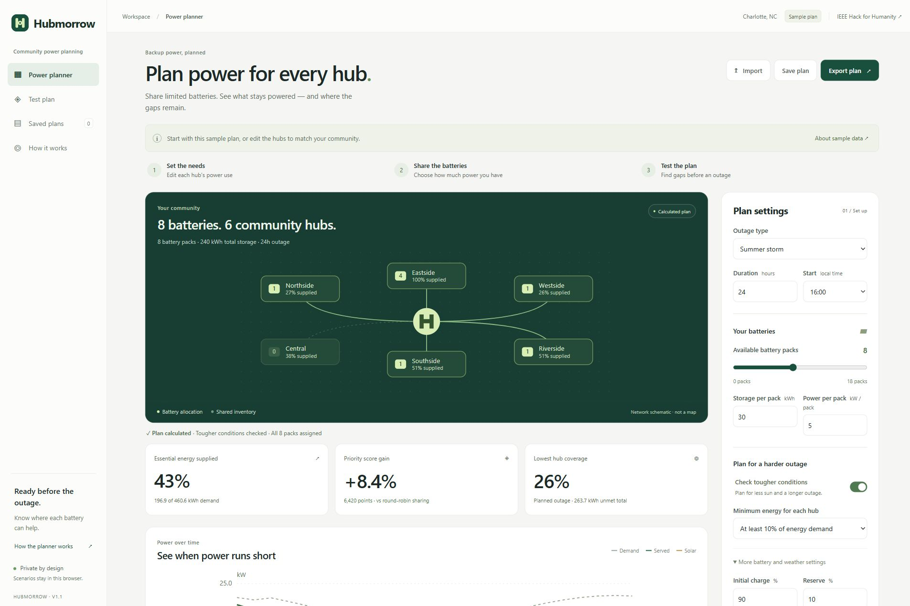
01 · Power planner
Plan backup power for a community. This sample shares eight batteries across six hubs and shows supplied energy, priority-score gain and remaining gaps.
Download 01 · Power planner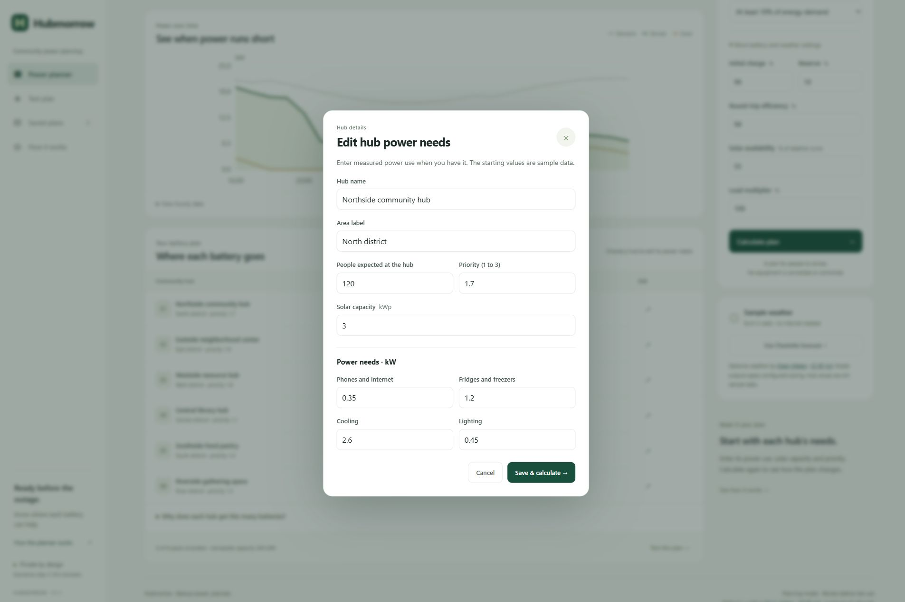
02 · Hub power needs
Set each hub's power needs. Edit phones and internet, refrigeration, cooling, lighting, solar capacity, expected occupancy and priority before calculating.
Download 02 · Hub power needs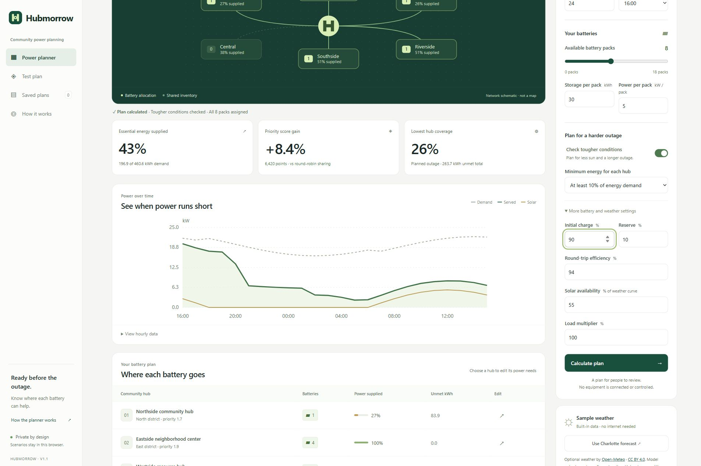
03 · Battery assumptions
Make the assumptions visible. Adjust initial battery charge, reserve, efficiency, solar availability and load levels before calculating.
Download 03 · Battery assumptions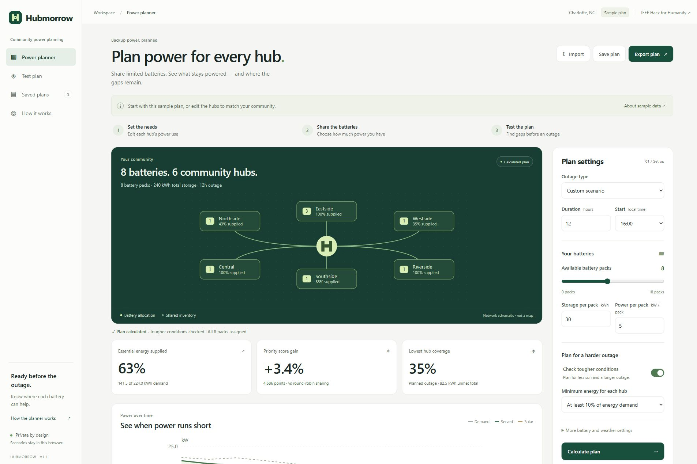
04 · Recalculate an outage
Explore a shorter outage. Changing the duration to 12 hours recalculates battery assignments, energy coverage and the hourly power balance.
Download 04 · Recalculate an outage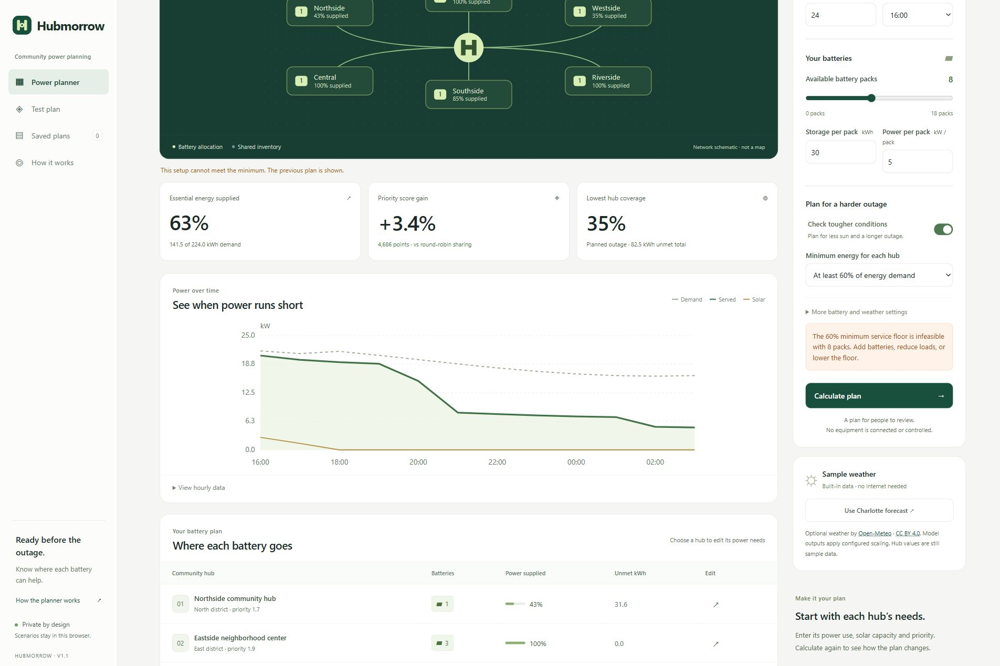
05 · Clear infeasibility
Get a clear answer when a request is impossible. A 60% minimum at every hub cannot be met with eight packs, so the app asks for more batteries, lower loads or a lower minimum.
Download 05 · Clear infeasibility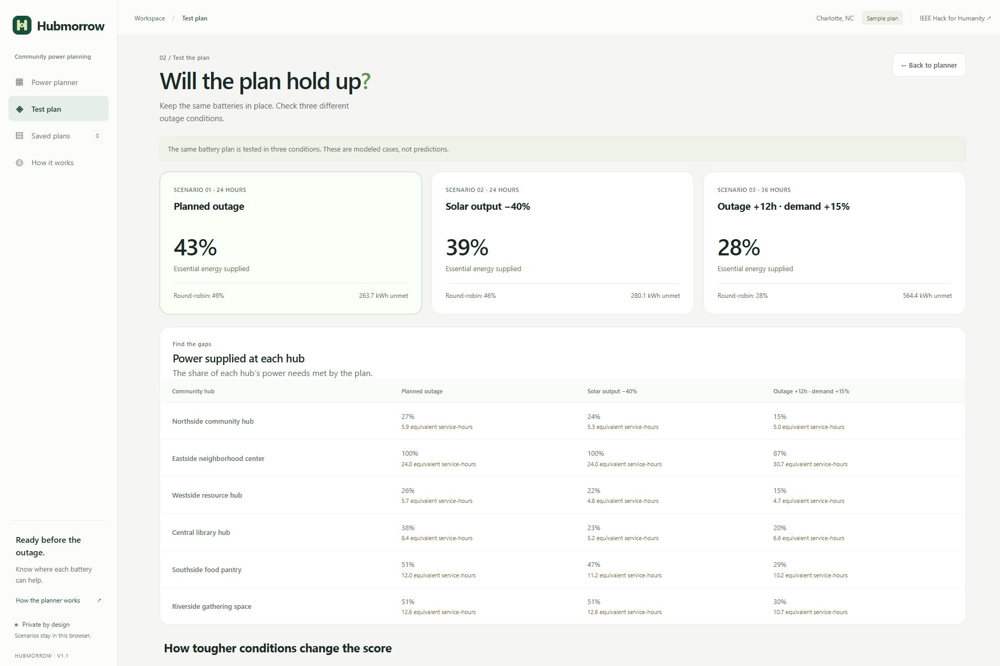
06 · Test three conditions
Test the same battery plan in three conditions: the planned outage, 40% less solar, and a 12-hour longer outage with 15% more demand. The round-robin comparison uses the same resources and minimum.
Download 06 · Test three conditions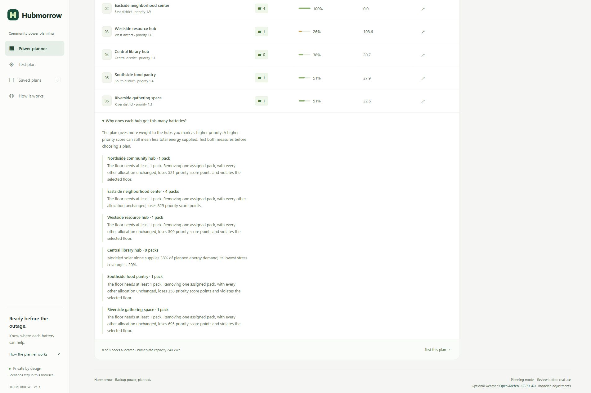
07 · Allocation reasons
See the reason for each assignment. The explanation shows the minimum packs needed and the priority-score loss from removing one pack, while keeping other assignments fixed.
Download 07 · Allocation reasons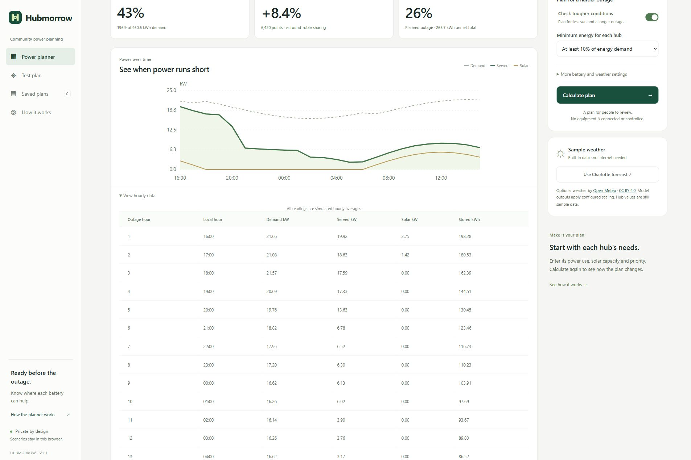
08 · Hourly energy table
Inspect the hourly values behind the chart. The accessible table reports demand, supplied power, solar output and stored energy for each modeled hour.
Download 08 · Hourly energy table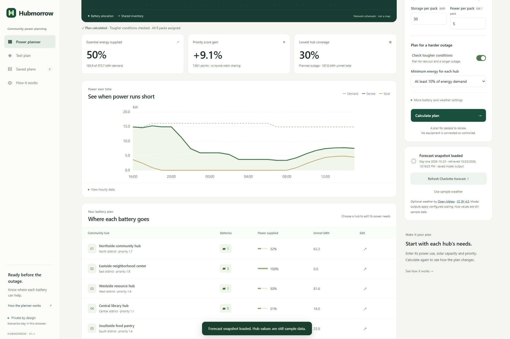
09 · Optional weather
Use an optional Charlotte forecast from Open-Meteo. The app shows the snapshot date and retrieval time, retains attribution and recalculates with the selected weather. Hub values remain sample data.
Download 09 · Optional weather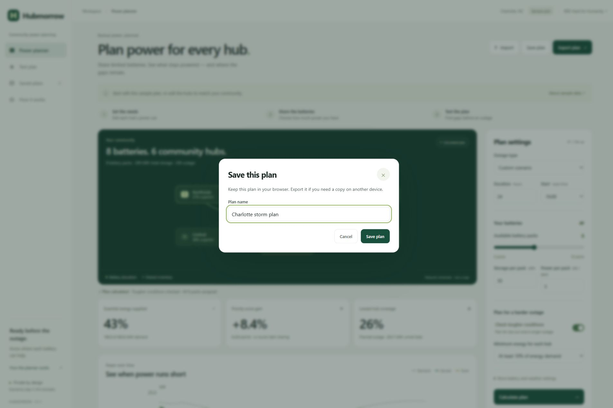
10 · Save a plan
Keep a named plan in this browser. Save its inputs so you can open it later, change the assumptions and calculate again.
Download 10 · Save a plan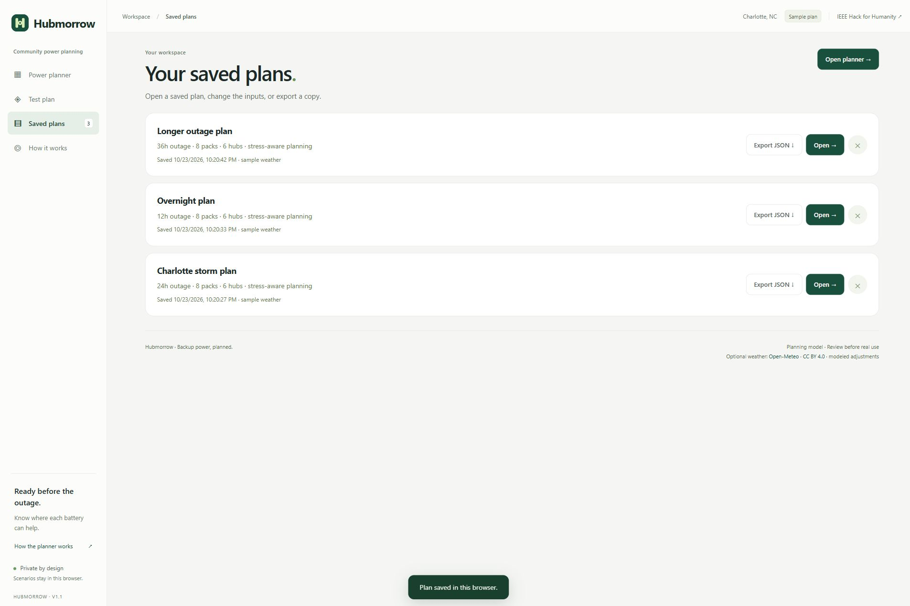
11 · Reopen saved plans
Compare saved planning cases. These three sample plans were created through the app: a 24-hour storm, a 12-hour overnight outage and a 36-hour case without a minimum floor.
Download 11 · Reopen saved plans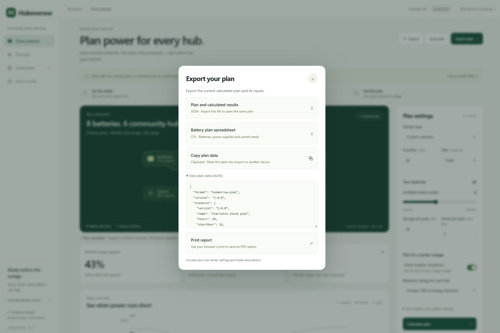
12 · Export and inspect
Take the plan with you. Export calculated inputs and results as JSON, create a CSV allocation table, copy plan data or print a report. The JSON preview makes the inputs inspectable.
Download 12 · Export and inspect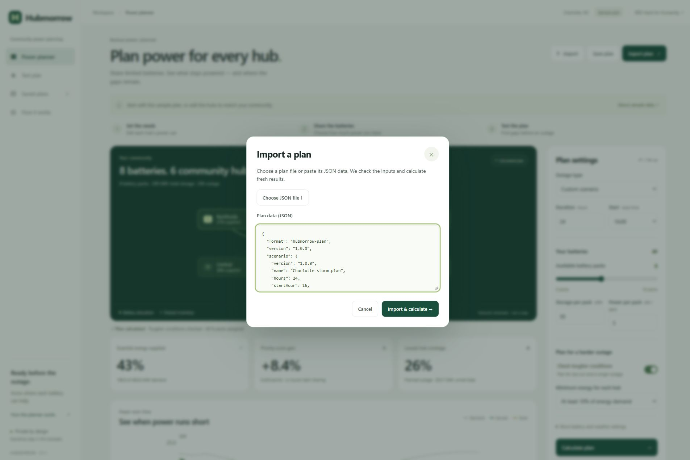
13 · Import and recalculate
Reopen the same plan from JSON. Inputs are checked, imported results are discarded and the app calculates fresh results. Clipboard export and pasted import were verified end to end.
Download 13 · Import and recalculate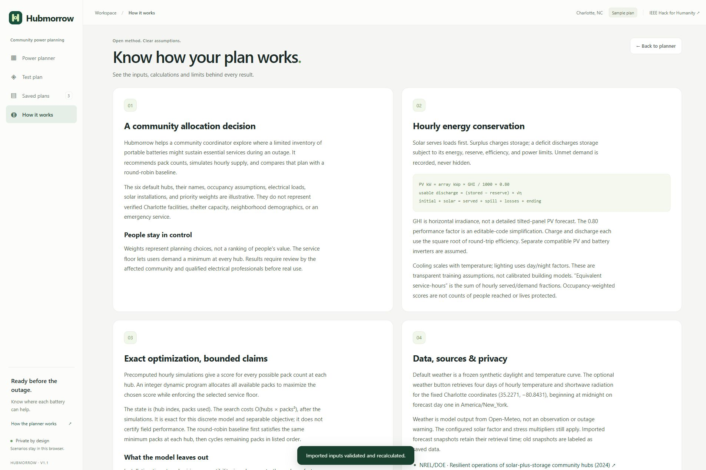
14 · Method and data
Know how the result works. Read the energy-balance rules, exact allocation method, data sources, privacy choices and practical limits before real use.
Download 14 · Method and data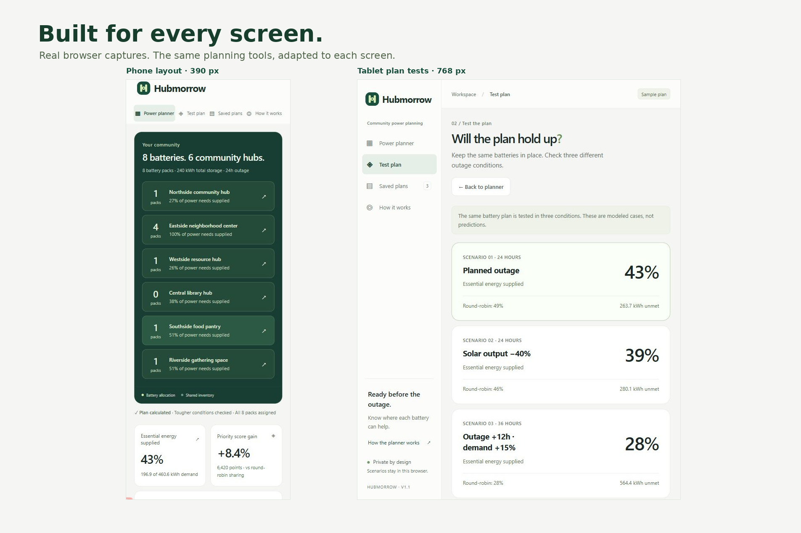
15 · Phone and tablet
Use the planner on different screens. These unretouched browser captures show editable hub rows at 390 px and the plan tests at 768 px. The layout adapts without hiding the key decisions.
Download 15 · Phone and tablet